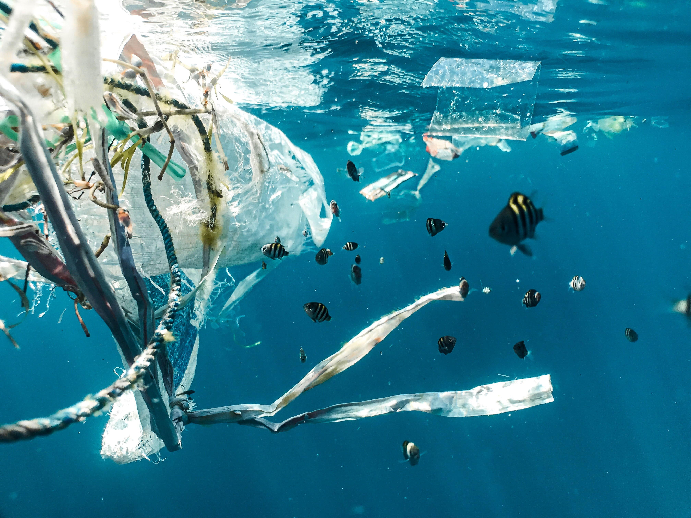
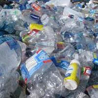
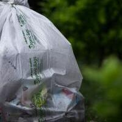
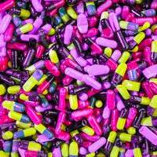

Econy lahir dari pertanyaan bagaimana jika sampah plastik yang setiap hari terbuang sia-sia
dapat memiliki nilai lebih atau malah menjadi aset yang berharga. Econy datang ingin
menjawab pertanyaan tersebut dengan mengubah sampah yang semula tidak ada nilainya menjadi
memiliki nilai, apakah perlakuan masyarakat terhadap sampah berubah ?.

Seandainya....
Saat ini terdapat 175 ribu ton Plastik terbuang setiap harinya, dan sejumlah 1000
Ton
terbuang sia-sia ke laut. Padahal sampah yang terbuang sia-sia tersebut jika diolah
dengan benar kami perkirakaan dapat menghasilkan nilai hingga 8 Trilliun Rupiah.
Tentu timbul pertanyaan sampai kapan masalah ini dibiarkan?
Masalah
Yang saat ini kami pecahkan
Sampah Plastik Yang Bersebaran
Masih banyak sampah plastik yang saat ini dibuang di berbagai tempat dan
berakhir dilaut dan mencemari lingkungan.
Kesadaran Masyarakat Terhadap Lingkungan
Masih rendahnya kesadaran baik terhadap sampah maupun lingkungan juga salah
satu alasan masih sulit untuk membenahi masalah lingkungan.
Kesejahteraan Pemulung
Kebanyakan solusi lingkungan yang ada terkadang lupa bahawa masih banyak orang
yang hidupnya bergantung dengan sampah.
Seputar Sampah Plastik
Masalah, Solusi dan Alasan Kami Ingin Menemukan Solusinya
Balai Kemenperin Temukan Inovasi Cara Ubah Sampah
Plastik Menjadi BBM
Kemenperin
Ekosistem Econy
Bagaimana Econy merubah sampah menjadi aset.

Etrash
Tempat orang membuang sampahnya
Etrash dilengkapi dengan berbagai sensor yang akan mendeteksi jika ada sampah yang
masuk.
Etrash App
Aplikasi untuk mendapatkan dan menukar token
Jika sampah sudah terdeteksi masuk. Etrash akan mengeluarkan kode, yang nantinya
pembuang sampah scan untuk mendapatkan token. Token tersebut dapat ditukar dengan
voucher, diskon serta berbagai layanan-layanan yang user dapat nikmati.

Mitra Econy
Yang semula pemulung, sekarang bekerja bersama Econy.
Diperangkat Etrash terdapat sensor yang akan mendeteksi jika sampah sudah penuh dan akan
langsung mengirim pemberitahuan kepada Econy pusat. Kemudian Econy akan menghubungi
Mitra Econy yang bertanggung jawab didaerah tersebut untuk mengambil sampah dari Etrash
yang sudah penuh, kemudia dikirim ke gudang pusat Econy

Econy
Merubah yang tak berharga menjadi aset
Sampah yang masuk akan kami pilah sebagian akan kami jadikan benih plastik, sebagian
lagi akan kami daur ulang menjadi berbagai hal mulai jadi sovenir, genting rumah,
kerajinan, dll. Hasil dari penjual sebagian akan diberikan kepada Mitra Econy. Sebagian
akan kami jadikan token yang dapat digunakan masyarakat.
GO FURTHER
WITH
TRASH
Studi: Jumlah Sampah di Bumi Akan Mencapai 1,3 Miliar Ton
Pada 2040
Nationalgeographic.co.id
Nationalgeographic.co.id – Diperkirakan 1,3 miliar ton plastik akan memenuhi Bumi
pada 2040—baik di daratan maupun di lautan—jika tidak dilakukan apa pun untuk
mecegahnya. Angka ini didapat dari model global skala masalah plastik selama 20
tahun ke depan.
Dr Costas Velis dari University of Leeds mengatakan bahwa hasil studi yang
dipiblikasikan pada jurnal Science ini sangat mengejutkan. Namun, menurutnya, “kita
memiliki teknologi dan kesempatan untuk membendungnya”.
“Ini adalah penilaian komprehensif pertama mengenai penggambaran dalam waktu 20
tahun,” ungkap Dr Velis, dilansir dari BBC.
“Sulit untuk menghitungnya karena plastik ditemukan di mana pun di dunia ini. Namun,
jika harus membayangkannya, maka plastik tersebut kira-kira akan menutupi wilayah
Inggris 1,5 kali lipat,” imbuhnya.
Untuk mengubah masalah kompleks ini ke dalam angka, para peneliti melacak produksi,
penggunaan, dan pembuangan plastik di seluruh dunia. Tim kemudian menciptakan model
untuk meramal polusi plastik di masa depan.
Dilihat dari tren, akan terjadi peningkatan produksi plastik dan tidak ada perubahan
signifikan pada aksi daur ulang. Hasilnya pun menunjukkan bahwa diperkirakan Bumi
akan memiliki 1,3 miliar ton pada 2040.
Dr Velis menambahkan, jika aksi pencegahan dilakukan, pemodelan mengungkapkan ada
710 juta ton plastik di lingkungan kita dalam dua dekade mendatang.
Dalam masalah sampah, jarang orang menyoroti bahwa ada sekitar dua miliar penduduk
yang tidak memiliki akses ke pengelolaan limbah yang tepat.
“Jadi mereka tidak punya pilihan selain membakar atau membuang sampahnya,” kata Dr
Velis.
Ia menambahkan, kebijakan pemerintah dalam mengatasi polusi sampah juga menjadi
bagian penting dari penyelesaian masalah ini.
Source:
Nationalgeographic.co.id
Begini Dampak Sampah Plastik Bagi Lingkungan dan Kesehatan
Manusia
Kumparan.com
Sampah plastik tidak hanya merusak ekosistem yang ada di
darat maupun laut, tetapi
juga ancaman nyata bagi kelangsungan seluruh makhluk hidup di dunia. Daya hancur
plastik terhadap lingkungan sangat besar, sebab ia sangat sulit terurai.
Dalam studi yang dilakukan oleh UN Environment Programme (UNEP) berjudul “Single-Use
Plastics: A Roadmap for Sustainabil-ity” pada tahun 2018 mengungkapkan, bahwa sampah
plastik berupa kantong dan styrofoam memerlukan ribuan tahun untuk bisa terurai.
Sedangkan penelitian Jenna R. Jambeck dari Georgia University pada 2010 menyebutkan,
ada sekitar 275 juta ton sampah plastik yang tersebar di seluruh dunia, dengan
sekitar 4,7 hingga 12,7 juta ton sampah berada di lautan. Ini artinya, setiap satu
menit, sampah plastik yang dibuang ke laut setara dengan satu truk penuh.
Di tahun 2010 pula Indonesia menjadi negara kedua penyumbang sampah plastik terbesar
ke lautan dunia, setelah China. Indonesia tercatat telah menghasilkan sampah plastik
sebesar 3,22 ton, dengan sekitar 0,48-1,29 juta ton di antaranya mencemari lautan.
Menurut Asosiasi Industri Olefin Aromatik dan Plastik Indonesia (INAPLAS), 65 persen
konsumsi plastik nasional masih didominasi oleh plastik kemasan. Dari total
permintaan plastik kemasan, sekitar 60 persen diserap oleh industri makanan dan
minuman.
Industri minuman, misalnya, menjadi salah satu sektor yang pertumbuhannya paling
cepat di Indonesia. Industri minuman di Indonesia tumbuh 22,74 persen pada semester
satu 2019.
Ketika industri terus bertumbuh, maka volume sampah plastik pun akan meningkat. Pada
2050 mendatang, diperkirakan akan ada 12 miliar ton sampah plastik di lingkungan.
Bahkan, World Economic Forum memprediksi lebih dari 32 persen sampah plastik bakal
tidak tertangani, hingga menjadi sampah yang berujung mengotori daratan dan lautan.
Begini Dampak Sampah Plastik Bagi Lingkungan dan Kesehatan Manusia (2)
Petugas menunjukkan contoh sampah plastik yang diduga mengandung limbah bahan
berbahaya dan beracun (B3) saat melakukan pemeriksaan. Foto: ANTARA FOTO/Andaru
Lantas, apa sebenarnya dampak yang bisa ditimbulkan dari sampah plastik pada
lingkungan maupun kesehatan?
Dipaparkan oleh Greenpeace, pada dasarnya sampah plastik ini berpotensi terbelah
menjadi partikel-partikel kecil, yang disebut sebagai mikroplastik dengan ukuran
sebesar 0,3 hingga 5 milimeter.
Partikel kecil inilah yang justru berbahaya, karena berpeluang masuk ke dalam tubuh
makhluk hidup, termasuk manusia. Adapun dampak yang bisa ditimbulkan pada manusia
antara lain kanker, stroke, serta penyakit pernapasan.
Selain itu, sampah plastik juga telah mengancam kelangsungan hidup biota laut.
Sebab, selain bisa melukai, sampah plastik juga rentan termakan oleh hewan, seperti
ikan, paus, dan penyu. Studi yang dilakukan oleh US National of Medicine National
Institutes of Health mengungkapkan, setidaknya ada 693 spesies di lautan yang
terdampak sampah plastik, dengan saat ini diperkirakan lebih dari 51 triliun
partikel mikroplastik telah mencemari lautan.
Bukan hanya itu, sampah plastik juga berpotensi mencemari tanah dan udara melalui
pembakaran terbuka atau insinerasi, menurut Greenpeace. Insinerasi sering dianggap
sebagai solusi paling mudah atas permasalahan pencemaran plastik berbasis lahan
skala besar.
Padahal, insinerasi ini dapat menghasilkan emisi karbon dioksida (CO2) terbanyak di
antara metode pengelolaan limbah plastik. Ketika ketergantungan pada insinerasi
tumbuh, maka secara langsung emisi dari limbah plastik juga akan meningkat.
Pembakaran plastik dan sampah diperkirakan akan memancarkan karbon setara dengan 189
megawatt pembangkit listrik tenaga batu bara pada akhir 2019.
Greenpeace menegaskan, perlu ada peran nyata dari berbagai pihak untuk membuat
kebijakan pengurangan produksi sampah plastik yang lebih fundamental, serta
memastikan penanganan yang lebih tepat dan sistematis atas permasalahan kemasan
plastik sekali pakai.
Source:
Kumparan.com
Bahan Plastik Ori Naik Harga, Industri Daur Ulang Optimistis
Tahun Depan
ekonomi.bisnis.com.
Bisnis.com, JAKARTA — Kalangan pelaku industri daur ulang plastik meyakini kegiatan
ekonomi pada 2021 berangsur pulih seiring dengan kegiatan vaksinasi massal.
Sementara kenaikan harga bahan baku ori plastik akan meningkatkan utilitas industri
daur ulang.
Ketua Umum Asosiasi Daur Ulang Plastik Indonesia (Adupi) Christine Halim mengatakan
kenaikan harga bahan baku ori plastik mulai kuartal IV/2020 dirasa pelaku usaha akan
meningkatkan utilisasi industri saat ini.
"Saat ini meski tergantung pada tiap fokus komoditas perusahaan yang dijual, tetapi
rerata di kisaran 50-60 persen. Perusahaan saya sendiri Langgeng Jaya Group 1.400
ton sekarang hanya 900 ton," katanya kepada Bisnis, Selasa (22/12/2020).
Christine pun berharap ke depan pemerintah lebih proaktif bersama-sama merilis
kebijakan yang mendukung keberlangsungan industri agar segera mampu keluar dari
keterpurukan akibat Covid-19. Dia menyebut utamanya Kementerian Perdagangan dan
Lingkungan Hidup dan Kehutanan karena sejauh ini Kementerian Perindustrian sudah
mampu proaktif mendukung industri.
Adapun kenaikan bahan baku ini dieluhkan Industri Plastik Hilir Indonesia (Aphindo)
yang menyatakan kegiatan impor saat ini penting dilakukan untuk mendapatkan bahan
baku plastik. Pasalnya, ketersediaan bahan baku di dalam negeri minim dan harga yang
ditawarkan tidak kompetitif.
Sekretaris Jenderal Aphindo Henry Chevalier mendata saat ini harga bahan baku
plastik on the spot telah mencapai US$20.000 per ton, sedangkan dengan metode pesan
berada di sekitar level US$19.000 per ton. Sementara itu, harga bahan baku impor
saat ini ada di posisi US$18.900 per ton.
"[Tapi,] ketersediaan bahan baku plastik impor langka. Pertama, pengiriman dari
negara asal impor sulit karena masalah kontainer. Kedua, kondisi cuaca tidak
kondusif. Itu yang jadi masalah," katanya.
Source:
ekonomi.bisnis.com
Meraup Tuah dari Sampah
Kumparan.com.
Hiruk pikuk truk-truk oranye bertuliskan “Dinas Kebersihan
Provinsi DKI Jakarta” di
Jalan Raya Narogong menemani perjalanan kami menuju Kampung Ciketing Sumurbatu,
Kelurahan Sumurbatu, Kecamatan Bantargebang, Kota Bekasi, Jawa Barat.
Ketika masuk ke Jalan Pangkalan V, kami yakin sedang memasuki zona tempat pembuangan
sampah terbesar di Jabodetabek: Tempat Pembuangan Sampah Terpadu (TPST)
Bantargebang.
Sumurbatu merupakan satu dari empat kelurahan di Kecamatan Bantargebang yang menjadi
tempat pembuangan sampah. Dari luas geografis kelurahan sekitar 568.955 hektare,
sebanyak 37,2 hektare digunakan sebagai TPST Bantargebang, dan 20 hektare di
antaranya merupakan tempat pembuangan sampah untuk ibu kota.
Kami tiba di Kampung Ciketing Sumurbatu sekitar pukul 11.00 WIB, dijemput Usman
(53). Ia, bersarung, datang dengan sepeda motornya.
Berjarak kurang 20 meter dari titik kami masuk kampung, terdapat salah satu gunungan
sampah TPST Bantargebang. Kampung ini memang dikepung sampah menggunung.
Sejak memasuki Jalan Pangkalan V hingga depan kampung itu, truk-truk oranye milik
Dinas Kebersihan Provinsi DKI Jakarta semakin banyak jumlahnya.
Bau sampah, walau tak menusuk, jelas tercium setiap waktu. Dan pada kali yang
melintang di depan kampung itu, dari Usman kami mengetahui, warna hitam air kali
tidak lain merupakan potret pencemaran lingkungan akibat sampah.
Diajak Usman berkeliling sejenak menyusuri kampung itu, kami memperhatikan para
penduduk tengah beraktivitas dengan sampah. Yang paling banyak terlihat ialah
penduduk yang sedang membersihkan bekas kemasan air mineral dan menimbang
sampah-sampah yang telah dibungkus dengan karung putih besar.
Di kampung itu, menurut Usman, hampir semua penduduknya menggantungkan kehidupan
dari sampah. Di halaman setiap rumah penduduk selalu terdapat tumpukan ragam jenis
sampah, baik yang sedang mengantre untuk dibersihkan maupun yang sudah dibersihkan
dan mengantre untuk ditimbang atau diambil oleh agen yang akan membelinya.
Pada bagian barat kampung tersebut, dari kejauhan terlihat pemandangan deretan
bedeng yang berdiri meramaikan tepi gunung sampah. Betapa pemandangan yang kontras,
antara gunung sampah yang berdiri menjulang dengan bangunan mungil ringkih tempat
tinggal para pemulung.
Usman memberitahu kami soal tempat tinggal para pemulung di Bantargebang. Dia
mengatakan, ada pemulung yang mengontrak rumah di dalam kampung dan ada yang tinggal
di bedeng tepat di tepi gunung sampah.
“Kalau di bedeng itu ikut bos. Ada juragannya, dia buat bedeng untuk menampung
pemulung. Jadi nanti barangnya lari ke situ (juragan). Nah kalau yang mengontrak,
dia bebas,” ujar Usman kepada kami.
“Yang di bawah (di bedeng) itu, dia berpikir enggak panjang. Dia yang penting enggak
mikirin (biaya kontrak) per bulan, enggak pernah mikirin bayar listrik.
Padahal kalau kehidupan sehat ya mendingan di ataslah (kontrak rumah di dalam
kampung), lebih sehat kan. Walaupun kontrak dekat sampah, tapi rumah layak seperti
di daerahnya. Tapi kalau di bedeng, bawahnya sampah,” kata Usman mendeskripsikan
kehidupan para pemulung di daerah itu.
Berbeda dengan pemulung di bedeng, pemulung yang mengontrak harus mengeluarkan biaya
kontrak rumah rata-rata Rp 300 ribu per bulan. Baik pemulung yang mengontrak maupun
yang tinggal di bedeng merupakan pendatang dari berbagai daerah. Keduanya, kata
Usman, sudah bermukim bertahun-tahun di sana sebagai pemulung.
Sebelum sampai ke rumah Usman, kami diantarkan ke salah satu rumah kontrakan
pemulung tempat kami akan bermalam. Penghuni rumah tersebut adalah Wawan. Ia tinggal
bersama seorang istri, dua anak, dan seorang mertuanya.
Kontrakan itu tampak sederhana, dengan lantai tanpa keramik dan perabot rumah
sekena-seadanya. Berkarung-karung sampah yang sudah dikumpulkan tampak teronggok di
samping dan belakang rumah Wawan yang berdekatan dengan rumah kontrakan lainnya.
Anak-anak bermain di sekitar rumah. Wawan dan keluarga menyambut hangat kami. Di
samping kemurahan hati mereka mengizinkan kami menginap, Wawan dengan tangan terbuka
juga membolehkan kami untuk mengikutinya memulung pada malam hari.
“Malah mau ikut mulung. Biarin deh, mau ngerasain rasanya mulung, nyium bau sampah
langsung,” ujar Usman kepada Wawan, menyulut tawa kami.
Usman lalu berpesan kepada Wawan, “Tapi nanti kalau mereka udah enggak kuat, kamu
anterin turun dulu. Paling-paling juga satu-dua jam kuatnya.”
Wawan memang lebih memilih untuk memulung pada malam hari. Menurutnya, “Kalau malam
kan udaranya lebih enak, adem, enggak panas. Kalau siang panas banget.”
Beranjak dari rumah Wawan, kami menuju ke rumah Usman yang berjarak sekitar 800
meter atau 1.100 meter dari titik tempat kami masuk kampung.
Lingkungan dan aktivitas penduduk sepanjang perjalanan itu menguatkan kesan konyol
kami, bahwa seolah tidak akan jadi soal jika kami membuang sampah plastik
sembarangan, terutama kemasan air mineral. Sebab, akan ada penduduk yang
mengambilnya untuk disatukan dengan sampah lain yang mereka kumpulkan.
Terlintas juga pikiran: jangan-jangan botol dan gelas air mineral yang kami minum di
kantor saban hari, kini ada di salah satu karung milik mereka.
Istri Usman dan beberapa orang tetangganya sedang sibuk membersihkan sampah bekas
air mineral ketika kami tiba di kediaman mereka. Sama seperti rumah lain di kampung
itu, karung-karung putih berisi sampah tersebut menjadi bagian dari “dekorasi”
lingkungan rumah Usman.
Sampah-sampah itu bisa saja tak perlu dibersihkan untuk langsung masuk karung. Namun
antara dibersihkan dengan tidak dibersihkan memiliki nilai ekonomis yang berbeda.
Misalnya saja, kata Usman, “Gelas mineral yang sobek (sudah dibersihkan bagian
atasnya) itu Rp 7.000 per kilogram. Sedangkan yang kotor itu Rp 4.000 per kilogram.”
Beberapa ibu memilah dan membersihkan sampah-sampah itu di bawah pohon rendah yang
rindang, sementara anak-anak mereka bermain dengan kaki telanjang.
Ketenangan suasana kampung bercampur pemandangan tersebut membuat kami nyaris lupa
bahwa jarak dari tempat itu ke ibu kota--tempat sampah-sampah itu berasal--hanya
kurang dari 40 kilometer.
Menurut laporan kependudukan Kelurahan Sumurbatu, ada sekitar 419 orang yang
berprofesi sebagai pemulung di wilayah itu--profesi keempat yang terbanyak di
kelurahan tersebut di bawah petani, pegawai swasta, dan buruh tidak tetap.
Meski terdapat 138 hektare sawah di kelurahan itu, sebagian lahan pertanian tersebut
sudah tercemar oleh sampah dari TPST Bantargebang. Jadi tak cukup mengherankan
ketika kami berkeliling menemukan ada lahan pertanian yang bersebelahan dengan
gunungan sampah, dan sebagiannya botak alias tak ditanami apapun.
Selepas senja, Usman dan keluarganya mengajak kami makan bersama di teras rumah
panggung miliknya. Hidangannya langsung memompa nafsu makan kami: nasi, telur dadar,
tumis genjer, ikan asin, dan sambal terasi.
Usman seolah paham betul cara meningkatkan semangat kami sebelum mendaki gunung
sampah mengikuti Wawan bekerja.
Sekitar pukul 20.30 WIB, kami dan Wawan sudah siap dengan sepatu bot dan senter
kepala. Wawan mengatakan, ia biasanya memulung dari sekitar pukul 19.00 WIB hingga
pukul 04.00 WIB dini hari.
“Kami mulung sampai pagi, kadang istirahat sebentar nyari lagi. Kadang-kadang kalau
tenaga masih kuat, kami (kerja) sampai siang, sampai jam 08.00 atau 09.00 WIB baru
pulang, kalau lagi fit badannya,” ujar Wawan.
Kepada Wawan dan kami, Usman kembali mengulang pesan yang ia sampaikan sebelumnya,
agar kami tak memaksakan diri meneruskan ikut memulung jika kelelahan.
Kami mengikuti Wawan ke gunung sampah di zona tiga. Zona itu merupakan yang paling
besar dan tinggi dari lima zona di TPST Bantargebang. Di zona itulah Wawan biasa
mencari peruntungannya pada sekitar 6.000 ton sampah yang berasal dari Jakarta
setiap harinya.
Saat berjalan menuju titik mendaki gunung sampah, Wawan beberapa kali
menunjuk-nunjuk butir-butir cahaya yang bergerak jauh di ketinggian. Butir-butir
cahaya itu merupakan tanda bahwa Wawan tidak akan sendirian. Butir-butir cahaya itu
berasal dari headlamp para pemulung yang tengah bekerja.
Sebelumnya, kami tidak pernah menyangka bahwa banyak pemulung di TPST Bantargebang
memilih bekerja di malam hari. Salah satu alasannya ialah karena truk-truk sampah
dari Jakarta yang beroperasi selama 24 jam mengirimkan sisa-sisa konsumsi sekitar 10
juta penduduk ibu kota.
Di samping, tentu saja seperti alasan Wawan, pada malam hari mereka tak perlu
berjibaku dengan sengatan panas matahari.
Untuk mencapai puncak gunung sampah setinggi 36 meter di zona tiga itu, bukan
perkara mudah bagi kami yang tak terbiasa. Curamnya bidang gunung sampah membuat
napas kami payah. Tenaga untuk bernapas pun dikuras oleh bau sampah yang melesak ke
hidung.
Belum pernah sebelumnya kami menginjakkan kaki di sebuah tempat di mana kami tidak
bisa melarikan diri dari sesak bau sampah yang mengepung.
Tak kurang dari 10 menit mendaki, kami sampai di atas gunung sampah. Kesan kami pun
berubah. Jika dari bawah kami melihatnya sebagai gunung sampah, setelah sampai di
atasnya dan gunung sampah itu berada di bawah kaki kami, kami justru merasa lebih
tepat menyebutnya sebagai lautan sampah.
Wawan pun mulai bekerja. Ia mengambil keranjang yang ada di tepi, lalu bergumul
dengan sampah seperti para pemulung lain. Beberapa pemulung tampak beristirahat
dengan menggelar karung sebagai alas. Sambil duduk atau tiduran, mereka asyik
mengobrol.
Pijakan kaki kami benar-benar hanya sampah. Kadang terasa padat, di lain tempat
terasa empuk. Bagaimana soal baunya? Kami berani bertaruh, mungkin itulah bau yang
paling busuk dan sesak yang pernah kami cium.
Jika seseorang meminta kami menggambarkan seperti apa baunya, mungkin kami tidak
bisa lain kecuali berbalik memintanya agar berada langsung di tempat kami saat itu.
Namun, para pemulung sudah terbiasa dengan itu. Tidak satu pun di antara mereka yang
terlihat menggunakan masker atau terganggu dengan bau sampah. Sementara kami tak
sanggup menahan dorongan untuk sesekali menutup lubang hidung.
Bagi Wawan, memulung jauh lebih mudah dinikmati daripada pekerjaan sebelumnya
sebagai sopir truk sampah selama 15 tahun. Meskipun, ia sadar risiko yang mesti
ditanggung jauh lebih besar.
“Lebih bebas (jadi pemulung). Kalau kerja jadi sopir kan salah sedikit aja diomelin,
telat aja diomelin, ditegur. Kalau pemulung kan bebas mau jam berapa aja berangkat,”
ucapnya.
Selain itu, keinginan untuk selalu dekat dengan keluarga menjadi alasan utama Wawan
untuk melakoni pekerjaannya saat ini.
“Kalau sopir, kan kadang-kadang jauh sama keluarga. Jadi jarang pulang. Kalau
pemulung setiap hari pulang. Enaknya di situ yang saya rasakan,” ujar Wawan.
Pendapatan sekitar Rp 100 ribu per hari bagi Wawan sudah cukup untuk memenuhi
kebutuhan sehari-hari. Bagi Wawan dan para pemulung seperti dirinya, bekerja adalah
urusan untuk hidup hari ini.
Dari ribuan ton sampah itu, Wawan tak perlu merasa cemas tidak akan mendapat uang
dalam sehari, asalkan ia mau memulung hingga keranjang penuh. Sebab, bagi Wawan dan
pemulung lainnya, semua jenis sampah memiliki nilai ekonomis.
“Bisa, (sampah) apa aja bisa (dijual). Dibilang laku semua sih laku kalau kami
ambilin semua. Cuma daun doang aja yang enggak laku,” ujar Wawan diwarnai senyum.
Ucapan dengan makna serupa juga telah kami dengar dari Usman sebelumnya. Ia
mengatakan, “hanya daun aja yang enggak jadi duit. Semuanya sudah jadi duit.”
Ujaran tersebut dengan sendirinya menunda atau mungkin membatalkan pengertian kata
“sampah” yang termuat dalam Kamus Besar Bahasa Indonesia (KBBI), yakni: barang atau
benda yang dibuang karena tidak terpakai lagi dan sebagainya.
Sampah, tampaknya, memang memiliki sejumlah arti definitif dan metaforis yang bisa
dimaknai secara berbeda sesuai ragam konteks dalam masyarakat.
Wawan, Usman, dan pemulung lain di TPST Bantargebang memaknai sampah sebagai bagian
dari peluang menyambung hidup dari hari ke hari. Ini tentu berbeda dengan kebanyakan
orang yang memandang sampah sebagai benda bekas yang hampir tentu tak mungkin lagi
memiliki nilai ekonomis, atau bahkan menjijikkan untuk sekadar disentuh.
Begitulah sekeping kesan yang kami dapatkan selama dua hari berada di Kampung
Ciketing Sumurbatu bersama para pemulung. Kisah lainnya akan kami ceritakan setelah
ini.
Ah ya, tentang mengapa kami ke sana, tak lain hanya ingin meihat sisi dunia yang
selama ini mungkin tak terbayang oleh kebanyakan orang. Bagian dunia yang sebetulnya
tak berjarak jauh dari kaum urban ibu kota.
Source :
Kumparan.com
Dua Pengusaha Muda Olah Sampah Plastik Kemasan Jadi Bahan
Bangunan
dw.com
Ovy Sabrina dan Novita Tan menggagas Rebricks karena resah
dengan menumpuknya sampah
plastik yang mencemari laut Indonesia. Dua orang yang bersahabat ini pun menawarkan
solusi dengan cara mengubah kantong kresek dan kemasan sampo menjadi paving block.
Mereka memulai usaha tersebut sekitar dua tahun lalu, dengan mendatangi
warung-warung makanan di Jakarta untuk berburu sampah kemasan dari kopi instan,
bungkus mi instan, dan kantong kresek bekas.
Berkat sosial media, aksi mereka mendapat perhatian, dan sekarang mereka mendapat
kiriman sampah kemasan dari para donor di seluruh Indonesia. Setiap hari mereka
menerima kiriman sampah tanpa henti dan memenuhi pabrik kecil Rebricks di Jakarta.
"Ini memperlihatkan bahwa Indonesia sebenarnya punya kesadaran tinggi untuk mendaur
ulang sampah plastik, tapi mereka tidak tahu di mana melakukannya,” ungkap Ovy
Sabrina.
Bagaimana cara daur ulang plastik kemasan jadi beton?
Dua tahun lamanya kedua perempuan yang berusia 30 tahunan itu berupaya untuk
menyempurnakan metode pengelolaan sampah mereka. Teknik membuat bata beton, mereka
pelajari dari usaha bisnis bahan bangunan yang dikelola keluarga Sabrina.
Sampah kemasan yang terkumpul di pabrik, kemudian dicacah oleh para pekerja Rebricks
menjadi serpihan kecil. Cacahan plastik ini kemudian dicampur dengan semen dan
pasir, lalu dicetak menjadi bahan bangunan seperti paving block atau konblok.
Kelihatannya memang seperti bata beton biasa, namun jika sudah dilepas dari
cetakannya maka terlihat cacahan plastik yang tercampur.
Dua pengusaha perempuan ini mengaku metode yang mereka tempuh sebenarnya adalah
untuk mengalih fungsikan limbah yang seharusnya berakhir di tempat pembuangan sampah
atau lautan. Sejauh ini mereka mengolah sekitar empat ton sampah, dan jumlah ini
akan terus bertambah.
"Setiap hari, kami dapat menghentikan sekitar 88.000 bungkus plastik sachet yang
mengotori lingkungan,” kata Novita Tan, seraya menambahkan bahwa perusahaan mereka
telah memproduksi lebih dari 100.000 batu bata.
Target bisnis dua pengusaha muda
Beberapa pengusaha daur ulang sampah memilih untuk mengubah limbah plastik menjadi
pot bunga atau payung dan dompet, namun Ovy Sabrina dan Novita Tan hanya ingin fokus
pada produk bata beton. Mereka beranggapan bahwa material bahan bangunan akan
menyentuh lebih banyak konsumen.
"Jika pendekatan kami adalah dengan menjual barang dekorasi yang mahal, maka hanya
akan sedikit orang yang membeli produk kami,” tutur Sabrina.
Saat ini ada empat orang karyawan yang dipekerjakan di pabrik Rebricks. Namun,
pengusaha muda ini ingin mengembangkan usaha mereka, dan mengaku sedang menjajaki
kolaborasi dengan perusahaan besar.
Salah satu konsumen, Andi Subagio mengaku ia menggunakan bata daur ulang ini untuk
membangun jalan setapak di restorannya. "Batu bata ini tidak serapuh batu bata biasa
karena ada plastik di dalamnya,” kata Andi sambil menambahkan "Dan harganya juga
tidak jauh beda.”
Indonesia penghasil sampah plastik dunia
Ide untuk menggagas Rebricks tebersit setelah Indonesia menjadi sorotan media karena
tercatat sebagai negara penghasil limbah laut terbesar kedua di dunia, setelah Cina.
Indonesia telah berkomitmen untuk mengurangi limbah plastik laut sekitar 70
persenselama empat tahun ke depan. Beberapa kota di Indonesia telah melarang
penggunaan plastik sekali pakai, namun tempat daur ulang sampah masih sangat langka.
Perhatian terhadap masalah sampah mencapai puncaknya tahun 2018 lalu setelah sampah
plastik seberat enam kilogram ditemukan di dalam perut seekor paus sperma yang mati
terdampar di perairan Pulau Kapota, Taman Nasional di Sulawesi Tenggara. (ts/yp)
Source:
dw.com
Balai Kemenperin Temukan Inovasi Cara Ubah Sampah Plastik
Menjadi BBM
kemenperin
Balai Besar Kimia dan Kemasan (BBKK), salah satu unit
lembaga penelitian dan
pengembangan (litbang) di bawah Badan Penelitian dan Pengembangan Industri (BPPI)
Kementerian Perindustrian di Jakarta, telah melakukan riset pengolahan sampah
plastik jenis polietilena (kantong plastik) sejak tahun 2009. Langkah strategis yang
dilakukan adalah dengan mengubah limbah plastik menjadi senyawa lainnya yang lebih
bermanfaat melalui proses pirolisis.
“Pada proses pirolisis, limbah plastik akan diubah menjadi fasa cair dan fasa gas
serta residu berupa padatan. Gas yang tidak terkondensasi juga diharapkan dapat
dimanfaatkan sebagai bahan bakar,” kata Kepala BPPI Kemenperin Ngakan Timur Antara
di Jakarta, Kamis (26/9).
Ngakan berharap, hasil litbang tersebut dapat membantu upaya pemerintah dalam
penanggulangan masalah sampah plastik. Berdasarkan laporan Bank Dunia What a Waste
2.0 yang diterbitkan pada tahun 2018, menyebutkan Indonesia menghasilkan sampah
cukup besar di dunia dengan volume mencapai 3,22 juta metrik ton per tahun. Oleh
karena itu, pemerintah menargetkan untuk mengurangi sampah plastik hingga 70% pada
tahun 2025.
“Untuk menyelesaikan permasalahan sampah plastik, banyak yang berpikir, bahwa cara
termudah adalah melalui proses pembakaran. Padahal cara tersebut adalah tidak benar.
Sampah plastik yang dibakar, mengandung gas rumah kaca bahkan zat diosksin dan
furan, yang oleh World Health Organization (WHO) sudah ditetapkan sebagai gas yang
memicu kanker pada manusia (karsinogenik),” paparnya.
Oleh karena itu, menurut Ngakan, beberapa keuntungan dari metode pirolisis untuk
pembakaran limbah plastik, antara lain beroperasi tanpa membutuhkan udara atau
campuran hidrogen dan tidak memerlukan tekanan tinggi, kemudian hidrokarbon yang
terbentuk dapat menghasilkan sebuah produk yang dapat dimanfaatkan, polutan-polutan
dan pengotor menjadi terkonsentrasi sebagai residu padatan. Selain itu, pirolisis
dilakukan pada sistem tertutup maka tidak ada polutan yang keluar.
Kepala BBKK Wiwik Pudjiastuti menjelaskan, reaktor pirolisis untuk mengubah bahan
baku limbah plastik menjadi crude oil terdiri dari tabung reaktor tegak dilengkapi
dengan inlet katalis untuk memasukkan katalis ke reaktor, inlet bahan baku untuk
memasukkan bahan baku ke reactor, dan pencampur mekanis untuk menghasilkan campuran
yang homogen sehingga memperluas permukaan sampel dan mudah menguap.
Selanjutnya, dilengkapi pula pemanas elektrik yang dapat diatur suhunya sesuai
dengan kebutuhan sifat fasa gas yang terbentuk selama proses, kondensor untuk
mengubah fasa gas menjadi fasa cair serta dilengkapi dengan tipe single tube untuk
memastikan semua fasa gas terkondensasi sempurna.
Berikutnya, terdapat saluran gas yang tidak terkondensasi dapat ditampung untuk
dimanfaatkan sebagai bahanbakar gas, saluran residu pada bagian bawah tabung reaktor
untuk mengeluarkan sisa padatan, serta adanya penampung crude oil di ujung bawah
kondensor.
“Produk yang dihasilkan oleh alat pirolisis hasil rekayasa BBKK ini memiliki
karakteristik setara solar dan setara pelarut yang merupakan hasil uji dari
Lemigas,” ungkapnya.
Berdasarkan uji laboratorium yang telah dilakukan, didapatkan spesifikasi pelarut
mendekati jenis pelarut produksi PT. Pertamina. Jenis pelarut tersebut, yaitu
Pertasol (10%), Minasol (10%), dan Low Aromatic White Spirites (30%) serta solar
(40%) dengan cetane number sebesar ± 60 sesuai spesifikasi Euro4.
Selain keempat pelarut itu, hasil samping yang potensial juga bisa dimanfaatkan
adalah gas yang jika diproses lebih lanjut dapat dimanfaatkan sebagai bahan bakar
gas. Gas yang dihasilkan melalui proses pirolisis, yaitu gas hidrogen 9,1%, metana
4,7%, etana 4,6% dan propana 12,2% dengan nilai kalor 1209,25 BTU/ft3.
Jika dibandingkan dengan nilai kalor gas alam yang sudah diolah (924 BTU/ft3 sampai
1027 BTU/ft3) dan nilai kalor gas pipa (950 BTU/ft3 sampai 1250 BTU/ft3) dengan
pengotor H2S maksimum16 ppm, gas hasil proses pirolisis memiliki kandungan nilai
kalor lebih tinggi sehingga mutunya lebih bagus sebagai bahan bakar serta tidak
mengandung zat yang bersifat korosif.
“Gas yang sudah dipurifikasi dapat dimasukkan ke dalam tabung. Pengemasan dalam
tabung akan memudahkan dalam penyimpanan dan aplikasi di lapangan. Gas hasil
pirolisis juga telah terbukti dapat diaplikasikan pada kompor gas, burner proses
pirolisis serta genset,” tutur Wiwik.